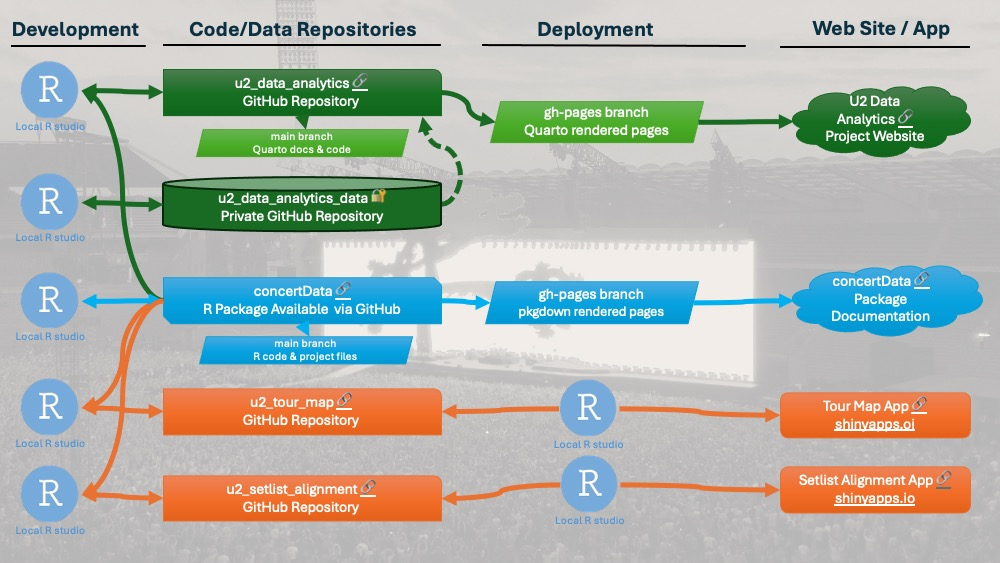
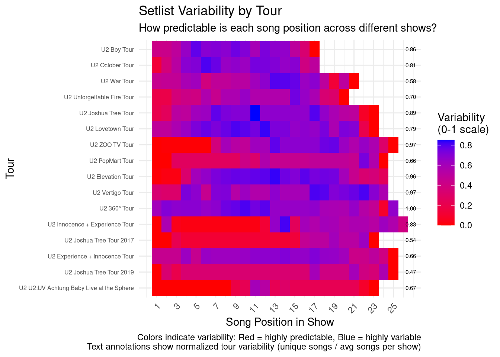
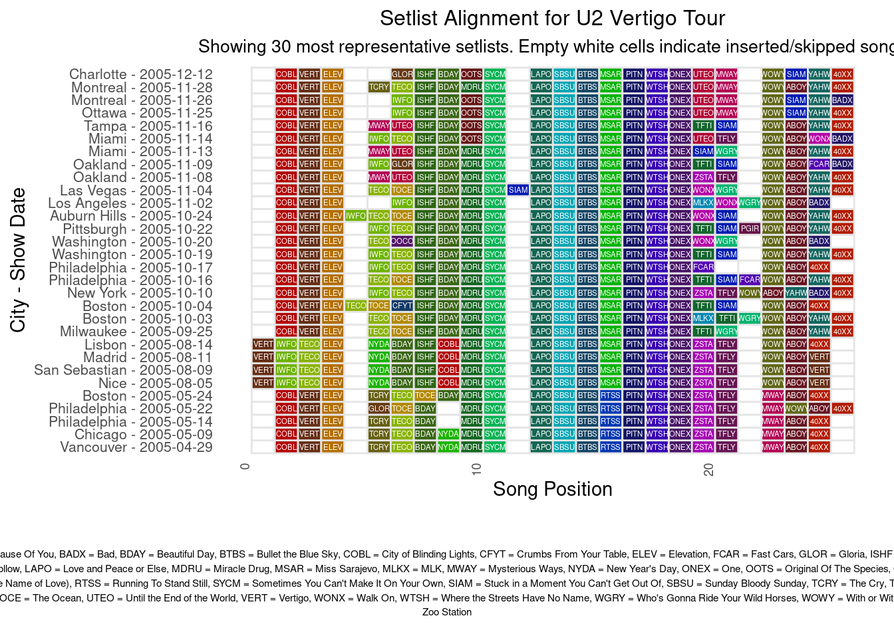
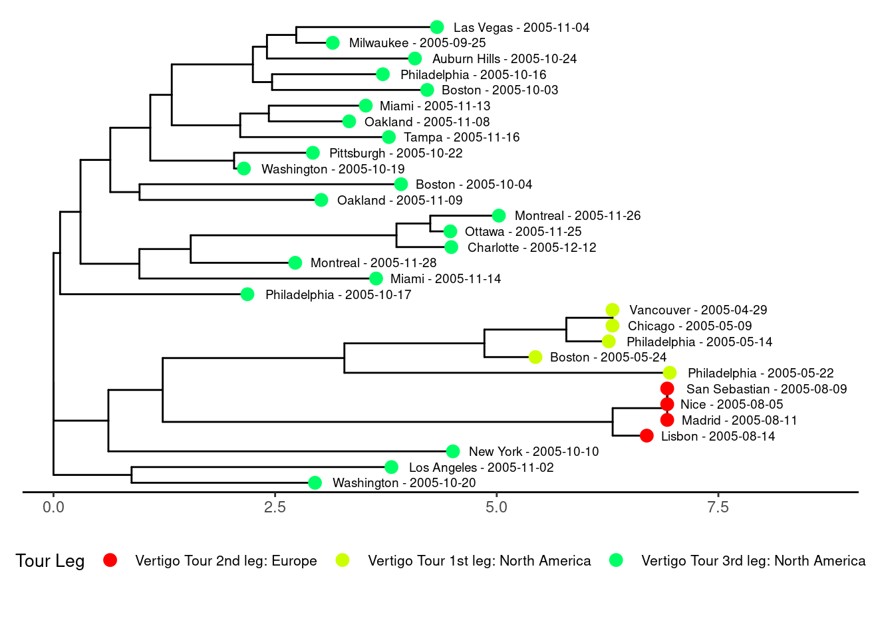
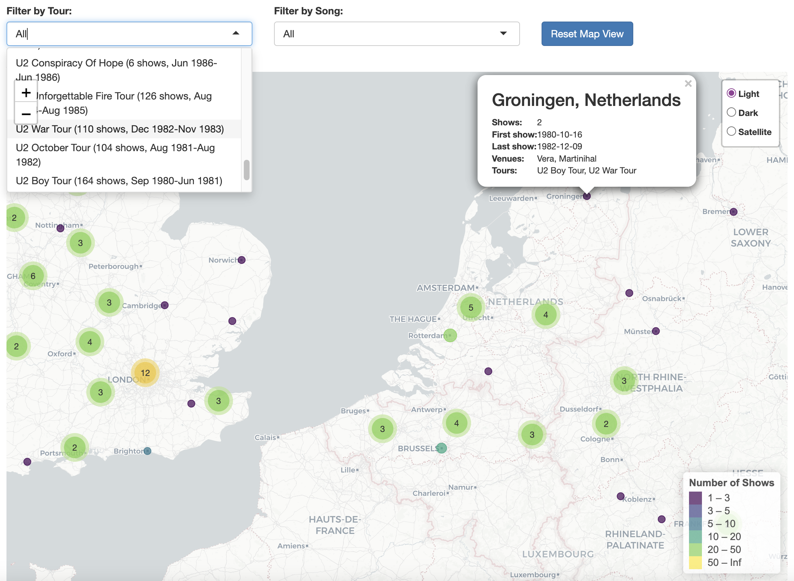

U2's Concert Data
An Analytical & Musical Journey

Hans van Leeuwen • November 2024
Acknowledgements
- Matt from u2gigs.com - comprehensive historical concert data
- My wife - valuable feedback and analysis ideas
- Generative AI tools - Claude, Perplexity, Gemini, ChatGPT
- Google instructors - Data Analytics Certification program
- R, GitHub, and Quarto community - tools and resources
- U2 - for their inspiring musical journey!
Why Analyze U2?
- A long-time U2 fan and data strategy professional
- Provide a data-informed view on setlist variability
- Highlight global impact across five decades
“We thought that we had the answers
It was the questions we had wrong”
∼ 11 O’Clock Tick Tock, U2, 1980
Behind the Data
- Data Sources:
- u2gigs.com: Concert details
- Supplementary geo-data for maps
- Preparation & Processing:
- Web-scraping and data management
- Standardizing formats
- Fixing inconsistencies
Project development, repository, deployment and publishing setup
U2 by the Numbers
- 2000+ Concerts
- 13 Major Tours
- 900+ Unique Songs Performed
- Active since 1976
Setlist Dynamics
Setlist Variability by Tour Chart
Exploring Patterns in Setlists
Multiple Setlist Alignment
Setlist Distance Tree
Experience the Data
Interactive Shiny App: U2 Tour Map
Interactive Map Visualization
Challenges and Insights
- Data Preparation Challenges:
- Handling inconsistent data formats
- Standardizing song names and setlists
- AI Integration:
- Leveraging AI for data summarization
- Enhanced visualization creation